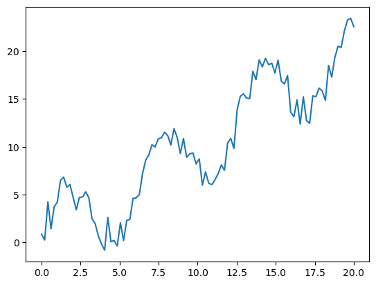
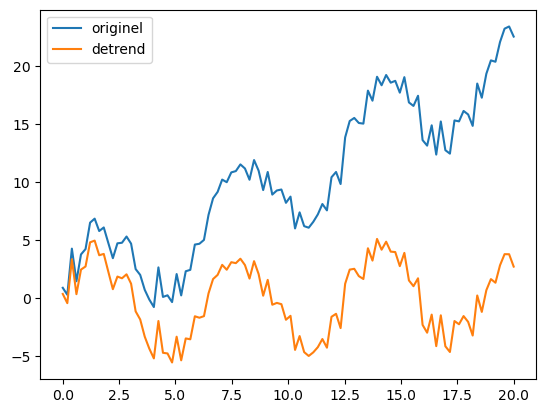
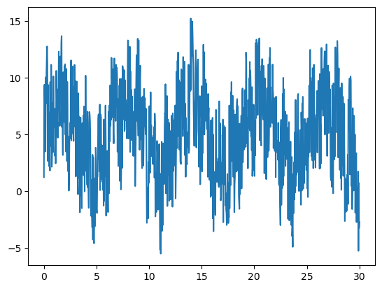
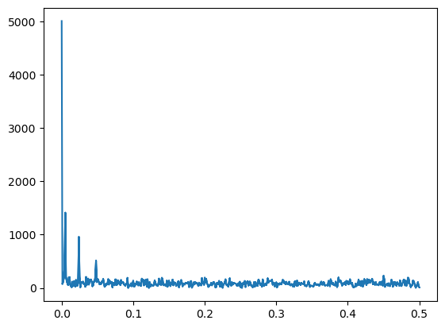
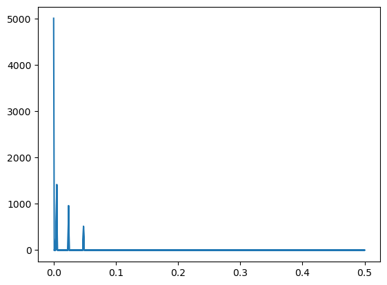
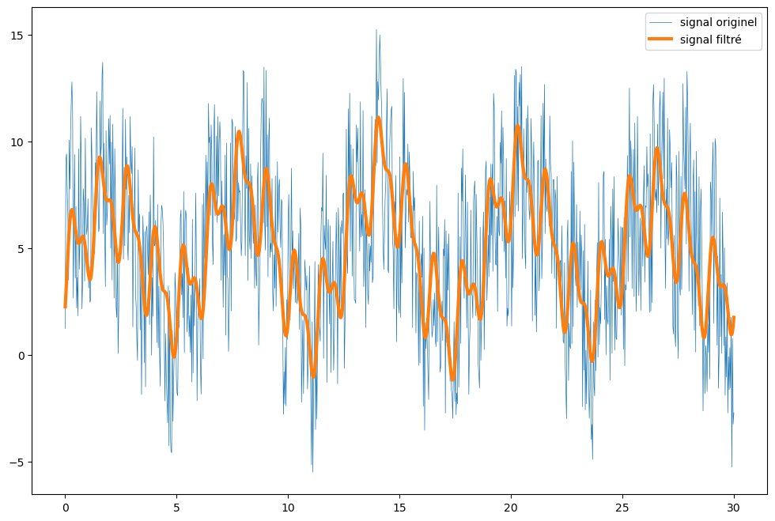

Scipy : Traitement du signal
Le module scipy.signal contient beaucoup de fonctions de convolution et de filtres pour faire du traitement du signal. La fonction signal.detrend est parfaite pour éliminer une tendance linéaire dans un signal. Utile pour beaucoup d'applications !
import numpy as np
import matplotlib.pyplot as plt
Le module scipy.fftpack contient des fonctions tres puissantes et simples d'utilisation pour effectuer des transformations de Fourier
# Création d'un Dataset avec une tendance linéaire
x = np.linspace(0, 20, 100)
y = x + 4*np.sin(x) +np.random.randn(x.shape[0])
plt.plot(x, y)

from scipy import signal
# Élimination de la tendance linéaire
new_y = signal.detrend(y)
# Visualisation des résultats
plt.plot(x, y, label='originel')
plt.plot(x, new_y, label='detrend')
plt.legend()
plt.show()

Transformation de Fourier (FFT)
La transformation de Fourier est une technique mathématique puissante et normalement complexe a mettre en oeuvre. Heureusement scipy.fftpack rend cette technique tres simple a implémenter
La transformation de Fourier permet d'analyser les fréquences qui composent un signal périodique (qui se répete avec le temps). Cette opération produit un graphique que l'on appelle Spectre.
Une fois le Spectre généré, il est possible de filtrer les bruits indésirables, ou bien de sélectionner seulement certaines fréquences, ou d'en atténuer d'autres... les possibilités sont infinies.
Dans l'exemple ci-dessous, nous voyons comment filtrer un signal noyé dans du bruit.
# Création d'un signal périodique noyé dans du bruit.
x = np.linspace(0, 30, 1000)
y = 3*np.sin(x) + 2*np.sin(5*x) + np.sin(10*x) + np.random.random(x.shape[0])*10
plt.plot(x, y)

from scipy import fftpack
# création des variables Fourier et Fréquences, qui permettent de construire le spectre du signal.
fourier = fftpack.fft(y)
power = np.abs(fourier) # la variable power est créée pour éiminer les amplitudes négatives
frequences = fftpack.fftfreq(y.size)
plt.plot(np.abs(frequences), power)

# filtre du spectre avec du boolean indexing de Numpy
fourier[power<400] = 0
# Visualisation du spetre propre
plt.plot(np.abs(frequences), np.abs(fourier))

# Transformation de Fourier Inverse: genere un nouveau signal temporel depuis le spectre filtré
filtered_signal = fftpack.ifft(fourier)
# Visualisation des résultats
plt.figure(figsize=(12, 8))
plt.plot(x, y, lw=0.5, label='signal originel')
plt.plot(x, filtered_signal, lw=3, label='signal filtré')
plt.legend()
plt.show()
